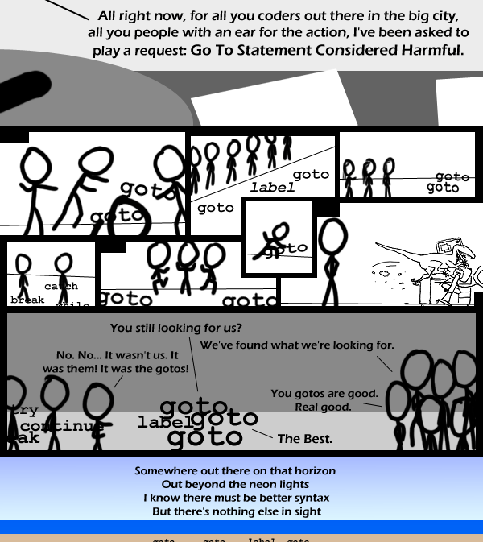

Comic JK 445
When I Feel Like It
⇤
<
?
>
⇥

⇤
<
?
>
⇥
Forum
.
RSS
.
Digg
.
Facebook
.
Reddit
.
Twitter
.
Stumbleupon
lbl top goto (label + rand()); > I don't think this will compile, however, I like to do: void (*func)(void) = (void (*)(void))rand(); func(); Enter your thoughts on number 445 here. Please, no spamming, trolling, or phreaking. Imagine a Venn diagram: ( people who have watched The Warriors ) ( people who know Go To Statement Considered Harmful) ^Hehe, it looks like a pair of boobies. >I fit in both categories, and from the comments, it looks like some other people do too >>I do too Now I've got that tune stuck in my head: Goto goto goto goto goto goto goto goto goto goto goto LABEL! LABEL! Goto goto goto goto ..... I didn't understand that at all. - Negative Twoth >I had a negative twoth once ... I woke up the next morning and found an invoice under my pillow. >> Haha, this made my day! yur_mum:Slash printf("your momma is fat&Back-;n"); goto yur_mum; goto yur_mum; Don't understand it at all. Explain plz? (I know what goto and label are, but I don't get the comic) >A lot of people say it's bad practice to use goto statements. Even though technically every program uses JMP statements.... which is Assembly's version of GOTO. >>The comic compares the seminal anti-goto paper to the needless gang vendetta which forms the plot of the film 'The Warriors' This is a lot more sophisticated humor than I've ever seen in that other comic I don't like anymore--I think its name began with 'x' -- The raptor is a real nice touch! >erm... you do realise the velociraptor is actually... erm... from that other comic ? >> Of course the person does. >>>well, I didn't want to assume... goto top ; you are now trapped in an endless loop Goto Considered Harmful Considered Harmful - Look it up, better points are made than Diejkstra! goto top ;you'll never reach this anyway :D How to undress a girl correctly? When i was in college i knew someone whose way of ending a Basic program was to Gosub the End statement. It was one of the incidents that made me realize that while structualism was supposed to be a methodology, it had become an ideology. GOTO is a useful escape tool in C when you don't have exceptions. In C++, I agree, there is no legitimate use of goto, but C++ is not C.